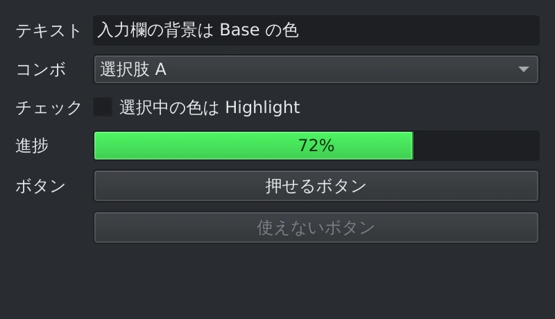
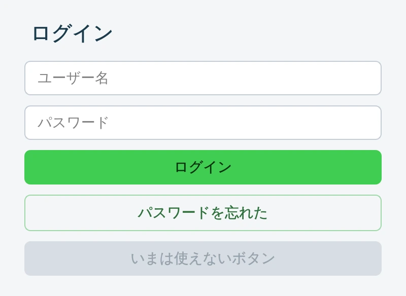
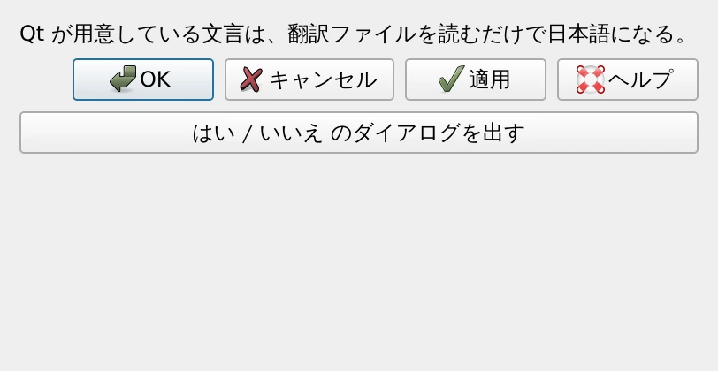
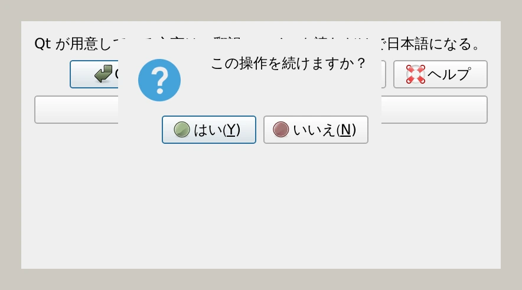

第 11 章·読了目安 13 分
第11章 見た目を整える — スタイルシートとテーマ
Qt は CSS によく似た記法で見た目を変えられます。ダークテーマ、アイコン、高解像度ディスプレイ対応まで。
Qt Widgets の見た目は、既定では OS のネイティブな外観になります。 それで十分なことも多いのですが、 「ブランドカラーを入れたい」「ダークテーマにしたい」となったら、この章の出番です。
見た目を決める 3 つの層
① スタイル — 全 OS で同じ見た目にする
app = QApplication(sys.argv)app.setStyle("Fusion")Fusion は Qt が用意している OS 非依存のスタイルです。 これを指定すると、Windows でも macOS でも Linux でも同じ見た目になります。
- ネイティブのまま … OS になじむ。ユーザーが慣れた操作感になる
- Fusion … どの環境でも同じ見た目。スクリーンショットやマニュアルとずれない。独自テーマの土台にしやすい
この教材のスクリーンショットは、章をまたいで見た目を揃えるために Fusion で撮影しています。
② パレット — 「役割ごとの色」をまとめて変える
Qt は色を直接持たず、役割で管理しています。
「ウィンドウの地の色」「入力欄の背景」「選択中の色」といった具合です。
その対応表が QPalette です。
| 役割 | どこの色か |
|---|---|
Window | ウィンドウの地の色 |
WindowText | その上に載る文字 |
Base | 入力欄・リストの背景 |
Text | 入力欄の中の文字 |
Button / ButtonText | ボタンの地と文字 |
Highlight / HighlightedText | 選択中の背景と文字 |
"""ダークテーマ — QPalette で「色の役割」をまとめて差し替える。スタイルシートが「見た目の上書き」なのに対し、パレットは「この役割の色は何色か」という土台の設定。Fusion スタイルと組み合わせると、どの OS でも同じダークテーマになる。実行: python ch11_dark_palette.py"""import sysfrom PySide6.QtGui import QColor, QPalettefrom PySide6.QtWidgets import (QApplication, QCheckBox, QComboBox, QFormLayout, QLineEdit, QProgressBar, QPushButton, QWidget)def dark_palette() -> QPalette: palette = QPalette() base = QColor(30, 32, 36) # 入力欄などの背景 window = QColor(42, 45, 50) # ウィンドウの地の色 text = QColor(228, 231, 235) accent = QColor(65, 205, 82) palette.setColor(QPalette.ColorRole.Window, window) palette.setColor(QPalette.ColorRole.WindowText, text) palette.setColor(QPalette.ColorRole.Base, base) palette.setColor(QPalette.ColorRole.AlternateBase, window) palette.setColor(QPalette.ColorRole.Text, text) palette.setColor(QPalette.ColorRole.Button, window) palette.setColor(QPalette.ColorRole.ButtonText, text) palette.setColor(QPalette.ColorRole.ToolTipBase, base) palette.setColor(QPalette.ColorRole.ToolTipText, text) palette.setColor(QPalette.ColorRole.Highlight, accent) palette.setColor(QPalette.ColorRole.HighlightedText, QColor(6, 52, 15)) # 「使えない状態」のときの色も指定しておくと仕上がりが良い。 palette.setColor(QPalette.ColorGroup.Disabled, QPalette.ColorRole.Text, QColor(120, 126, 134)) palette.setColor(QPalette.ColorGroup.Disabled, QPalette.ColorRole.ButtonText, QColor(120, 126, 134)) return paletteapp = QApplication(sys.argv)app.setStyle("Fusion") # パレットを素直に反映してくれるスタイルapp.setPalette(dark_palette())window = QWidget()window.setWindowTitle("ダークパレット")window.resize(400, 230)form = QFormLayout(window)name = QLineEdit("入力欄の背景は Base の色")form.addRow("テキスト", name)combo = QComboBox()combo.addItems(["選択肢 A", "選択肢 B", "選択肢 C"])form.addRow("コンボ", combo)form.addRow("チェック", QCheckBox("選択中の色は Highlight"))bar = QProgressBar()bar.setValue(72)form.addRow("進捗", bar)form.addRow("ボタン", QPushButton("押せるボタン"))off = QPushButton("使えないボタン")off.setEnabled(False)form.addRow("", off)window.show()sys.exit(app.exec())
Windows のネイティブスタイルは OS 側が描画を行うため、
パレットの色を無視することがあります。
ダークテーマを自作するなら、setStyle("Fusion") とセットで使ってください。
QPalette.ColorGroup.Disabled を指定しないと、
「使えないボタン」の文字色が背景に溶けて読めなくなることがあります。
ダークテーマを作るときは必ず設定してください。
③ スタイルシート — CSS によく似た細かい指定
Qt Style Sheets（QSS）は、Web の CSS とよく似た書き方で見た目を指定できる仕組みです。
"""Qt Style Sheets — CSS によく似た書き方で見た目を変える。セレクタはクラス名 (QPushButton)、id (#saveButton)、状態 (:hover, :disabled) が使える。実行: python ch11_stylesheet.py"""import sysfrom PySide6.QtWidgets import (QApplication, QLabel, QLineEdit, QPushButton, QVBoxLayout, QWidget)STYLE = """QWidget { background: #f4f6f8; font-size: 14px;}QLabel#heading { font-size: 20px; font-weight: bold; color: #1b3a4b; padding-bottom: 4px;}QLineEdit { background: white; border: 1px solid #c3ccd5; border-radius: 6px; padding: 7px 10px; selection-background-color: #41cd52;}QLineEdit:focus { border-color: #41cd52;}QPushButton { background: #41cd52; color: #06340f; border: none; border-radius: 6px; padding: 8px 18px; font-weight: bold;}QPushButton:hover { background: #5adb6a; }QPushButton:pressed { background: #33a642; }QPushButton:disabled { background: #d7dde3; color: #97a3ae;}/* id で 1 つだけを狙い撃ちする */QPushButton#secondary { background: transparent; color: #2f6f3c; border: 1px solid #9fd8a8;}"""app = QApplication(sys.argv)app.setStyleSheet(STYLE) # アプリ全体に適用（ウィジェット単位でも設定できる）window = QWidget()window.setWindowTitle("Qt Style Sheets")window.resize(400, 240)heading = QLabel("ログイン")heading.setObjectName("heading")user = QLineEdit()user.setPlaceholderText("ユーザー名")password = QLineEdit()password.setPlaceholderText("パスワード")password.setEchoMode(QLineEdit.EchoMode.Password)login = QPushButton("ログイン")secondary = QPushButton("パスワードを忘れた")secondary.setObjectName("secondary")disabled = QPushButton("いまは使えないボタン")disabled.setEnabled(False)layout = QVBoxLayout(window)layout.setContentsMargins(24, 20, 24, 20)layout.setSpacing(10)for widget in (heading, user, password, login, secondary, disabled): layout.addWidget(widget)window.show()sys.exit(app.exec())
セレクタの書き方
| 書き方 | 意味 |
|---|---|
QPushButton { … } | すべてのボタン（継承したクラスも含む） |
.QPushButton { … } | ちょうどそのクラスだけ（継承先は除く） |
QPushButton#saveButton { … } | objectName が saveButton のもの |
QDialog QPushButton { … } | ダイアログの中にあるボタン |
QPushButton:hover { … } | マウスが乗っているとき |
QPushButton:disabled { … } | 無効になっているとき |
QComboBox::drop-down { … } | 部品の一部分（コロン 2 つ） |
box-shadow、transition、flex、gridは使えません。並べるのはレイアウトの仕事です- 使える単位は基本的に
pxだけ。emや%は多くのプロパティで効きません border-radiusを効かせるには、多くの場合borderも指定する必要があります- あるウィジェットに
backgroundを指定すると、その子にも影響することがあります
たとえば QPushButton { background: red; } と書いた瞬間、
そのボタンは OS ネイティブの描画をやめて、スタイルシートの指定だけで描かれます。
角丸や境界線も自分で指定しないと、のっぺりした四角になります。
色だけ変えるつもりが全部変わってしまうのは、これが理由です。
適用する範囲
app.setStyleSheet(STYLE) # アプリ全体window.setStyleSheet(STYLE) # そのウィンドウと、その中の全部button.setStyleSheet(STYLE) # そのボタンだけ外部ファイルに置いて読み込むと、コードと見た目を分けられます。
from pathlib import Pathapp.setStyleSheet(Path("theme.qss").read_text(encoding="utf-8"))標準ボタンを日本語にする
ここまでのスクリーンショットで、ダイアログのボタンが［OK］［Cancel］と英語になっていたのに 気づいたでしょうか。Qt が用意している文言は、翻訳ファイルを読み込むだけで日本語になります。 自分で訳す必要はありません。
"""標準ボタンを日本語にする — Qt 自身の翻訳ファイルを読み込む。［OK］［Cancel］［Yes］［No］などは Qt が用意している文言なので、自分で翻訳する必要はない。Qt に同梱されている qtbase_ja.qm を読み込むだけで日本語になる。読み込みは QApplication を作った直後、画面を作る前に行うこと。実行: python ch11_japanese.py"""import sysfrom PySide6.QtCore import QLibraryInfo, QTranslatorfrom PySide6.QtWidgets import (QApplication, QDialogButtonBox, QLabel, QMessageBox, QPushButton, QVBoxLayout, QWidget)app = QApplication(sys.argv)# --- ここが本題 -----------------------------------------------------------translator = QTranslator()# Qt 本体の翻訳ファイルが置かれている場所を、Qt 自身に聞く。translations = QLibraryInfo.path(QLibraryInfo.LibraryPath.TranslationsPath)# 日本語に決め打ちする場合（OS の言語設定に関係なく日本語にしたいとき）。if translator.load("qtbase_ja", translations): app.installTranslator(translator)# OS の言語設定に合わせたいときは、代わりにこちら。# from PySide6.QtCore import QLocale# translator.load(QLocale.system(), "qtbase", "_", translations)## translator は変数に持ち続けること。捨てると翻訳も一緒に消える。# --------------------------------------------------------------------------window = QWidget()window.setWindowTitle("標準ボタンの日本語化")window.resize(400, 210)layout = QVBoxLayout(window)layout.addWidget(QLabel("Qt が用意している文言は、翻訳ファイルを読むだけで日本語になる。"))# QDialogButtonBox の標準ボタン。buttons = QDialogButtonBox( QDialogButtonBox.StandardButton.Ok | QDialogButtonBox.StandardButton.Cancel | QDialogButtonBox.StandardButton.Apply | QDialogButtonBox.StandardButton.Help)layout.addWidget(buttons)ask = QPushButton("はい / いいえ のダイアログを出す")ask.setObjectName("askButton")ask.clicked.connect(lambda: QMessageBox.question(window, "確認", "この操作を続けますか？"))layout.addWidget(ask)layout.addStretch()window.show()sys.exit(app.exec())

第 7 章と同じ話です。QTranslator をローカル変数のままにすると、
関数を抜けた瞬間に回収されて翻訳が消えます。
モジュールレベルの変数か self に持たせてください。
また、翻訳の読み込みはウィジェットを作る前に行う必要があります。 後から入れても、すでに作られた画面の文字は変わりません。
アイコンを使う
from PySide6.QtGui import QIconfrom PySide6.QtWidgets import QStyle# ① 自分で用意した画像からbutton.setIcon(QIcon("icons/save.png"))# ② Qt が持っている標準アイコンから（追加の画像が要らない）icon = self.style().standardIcon(QStyle.StandardPixmap.SP_DialogSaveButton)button.setIcon(icon)# ③ OS のアイコンテーマから（主に Linux）button.setIcon(QIcon.fromTheme("document-save"))
save.png と同じ場所に save@2x.png を置いておくと、
Qt が高解像度ディスプレイで自動的にそちらを使います。
最初から SVG を使えば、この心配自体がなくなります。
高解像度ディスプレイ（High DPI）
Qt5 の記事には、次のようなコードがよく出てきます。
QApplication.setAttribute(Qt.AA_EnableHighDpiScaling) # Qt5 の書き方QApplication.setAttribute(Qt.AA_UseHighDpiPixmaps) # Qt5 の書き方Qt6 ではこれらは既定で有効になっており、書く必要がありません。 むしろ古い属性は非推奨になっているので、見かけたら削除してください。 高解像度対応は、何もしなくても効いています。
ch11_stylesheet.pyの#41cd52を好きな色に変えて、ホバー時・押下時の色も調整してみる。ch11_dark_palette.pyのdark_palette()をch11_stylesheet.pyに組み込み、ダークなログイン画面にする。ch11_japanese.pyの翻訳読み込みの行をコメントアウトして、ボタンが英語に戻ることを確かめる。
この章のまとめ
- 見た目は「スタイル → パレット → スタイルシート」の 3 層。下ほど強い。
- 全 OS で同じ見た目にしたいなら
setStyle("Fusion")。 - ダークテーマは
QPalette＋ Fusion。Disabledの色も忘れずに。 - スタイルシートは CSS 風だが、影・アニメーション・flex は使えない。1 か所指定すると描画が全部自前になる。
- 標準ボタンの日本語化は
QTranslatorでqtbase_jaを読むだけ。変数を残すこと。 - High DPI 対応は Qt6 では既定で有効。Qt5 の属性設定は不要。